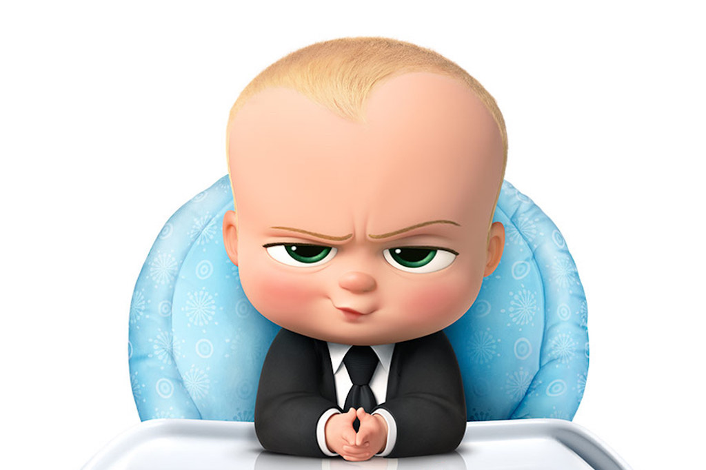

No longer are the times when a president has to be 35 years or older.
If the people want someone who happens to be younger, than they deserve that person as president.
This new change allows anyone to be president regardless of their age.

depiction of a young president
The Votes are in
As everyone all knows, its time for a new president. The votes are not even close, with the left and right both voting for the same person.
Its a landslide victory, Ethan Sutton is our new president.